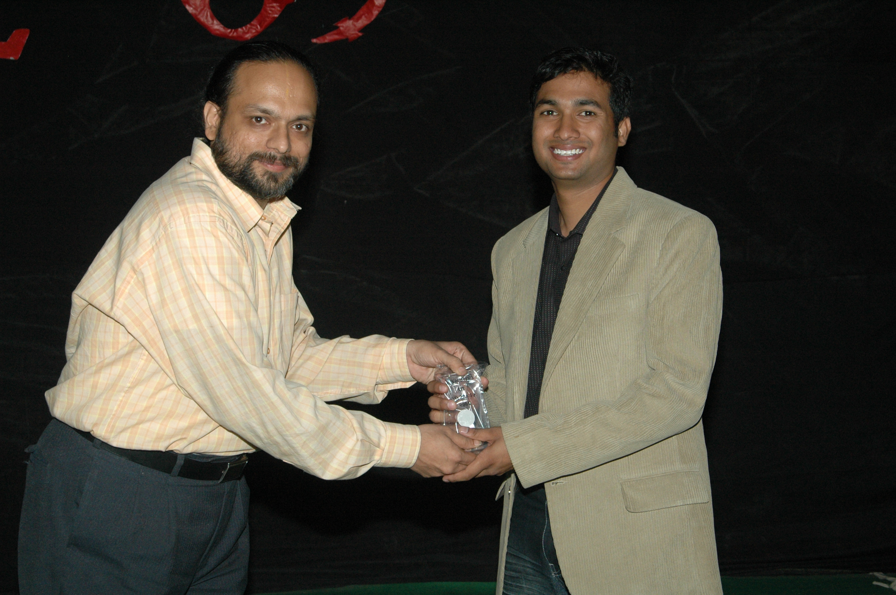
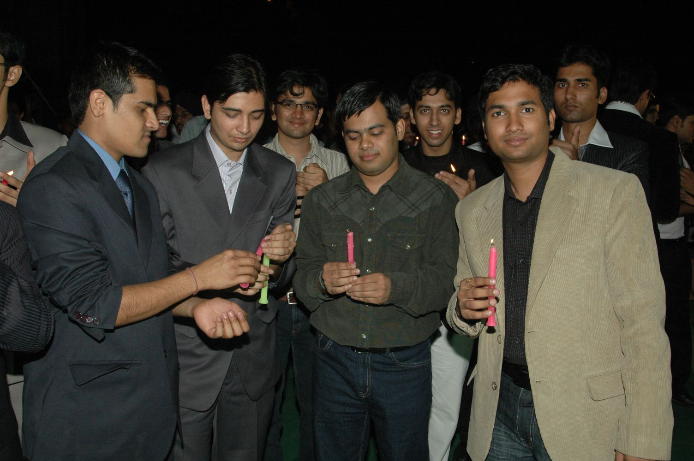
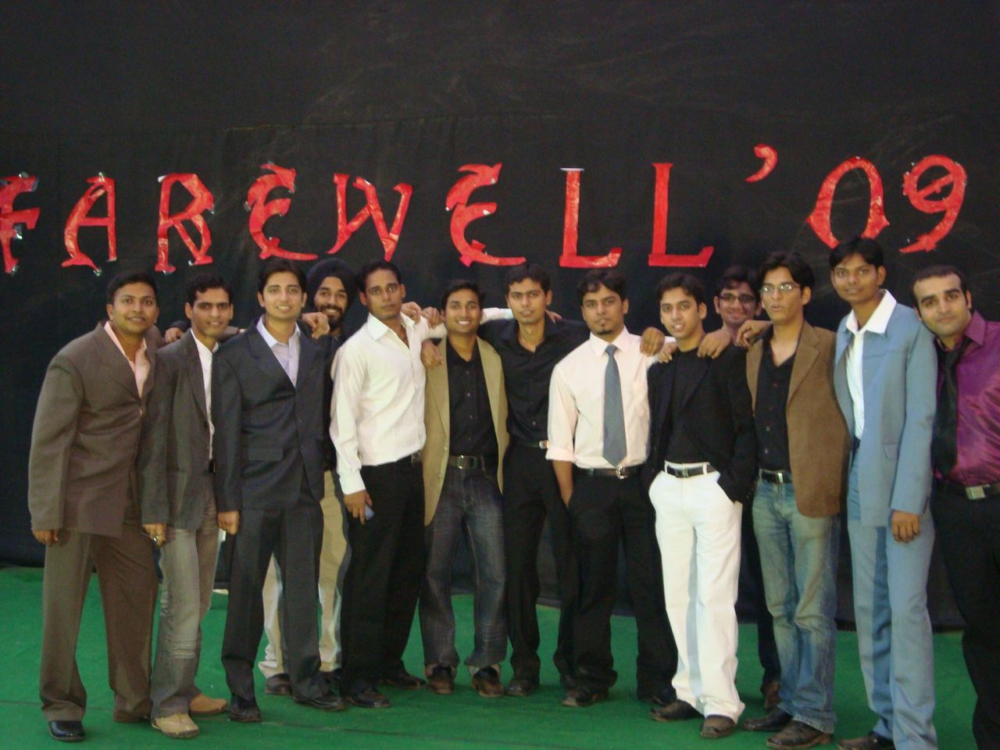

The Yearbook - Commemorating 2005-09!
Rishi Gupta's profile information
Name - Rishi GuptaBirthday - 8th Sept
Email - coolrishi2005@gmail.com
Address - Ajmer
Phone - 0145-2601020
Webpage - Link
Hobbies - Playing Cricket, Watching Movies
WishList - Joining Date from Motorola :)
Memorabilia - Success of Felicity '08 and Inter Batch Cricket Championsip Final '08
What would you want to be remembered as - A person who is capable of doing anything
Future Plans - MBA
Testimonials written by Rishi Gupta
Rishi Gupta's Album

{kind=link}
Memorandum

{kind=link}
Candle Ceremony

{kind=link}
On the Farewell Night
Testimonials
Abhishek Sainani wrote-First thing I remember of him is that he's good at playing cricket. I met him a lot in my third year when I went to live at his floor. I had good time with him playing corridor cricket.
He insisted I be his team mate in Software Engineering and I am glad about that. I had real good time while making the video for the presentation !!

Next thing, when we played TT together, he always took me in his team and although I suck at TT, he plays so well that we used to win most of the time!
I really had a good time with you, I'm sure the vice-versa is also true.

All the best for the future, I'm sure it'll be better but not as these college days!!
Sambhav Jain wrote-
Part1
"Mode1 me gussa aur Mode2 me khushi !!
Zordaar khiladi hai, naam hai Rishi !!!"
When I first set the foot in the campus, it was a warm feeling
 to see a familier face standing in front of NBH
to see a familier face standing in front of NBH  ... it was the coooldude ... Rishi ...I thanked god to for increasing my acquaintance count +1 ...
... it was the coooldude ... Rishi ...I thanked god to for increasing my acquaintance count +1 ...
...rest was the "Bansal Factor"
which converted this little acquaintance into deep friendship ... and today while writing this I'm again thanking god...
He,Bansi and GupTha were the frequent visiters to C-12
aur bhai aka Kapil ko bahut tang karte the  ... specially dophar me jab sone ka time hota tha to uske bed gher lete the ...
... specially dophar me jab sone ka time hota tha to uske bed gher lete the ... 
It wasn't late to discover that this guy is equipped with NItro Boosters
... highly charged, very active and agile in all the sports  ... he is one of the key ppl because of who I also actively participated in sports ...
... he is one of the key ppl because of who I also actively participated in sports ...
Not only sports .. he has always backed me whenever I was in any kind of dillema
 ... he used to praise me on my achievement and I can always find his face in the audience appreciating me
... he used to praise me on my achievement and I can always find his face in the audience appreciating me
He has taught a lot of subjects to me
...I owe all my A grades in Mathematics and related subject to him ... very sincere just in class and before exams ... infact exam ke time iska koi aur mode hi chaaloo ho jata hai ... baniyaan aur shorts me rehta hai aur shave nahi karta ... bas padhta rehta hai .. good for us
He is the outing planner specially in the first sem
... weekday ho ya weekend .. shaam ko free hote hi nikal padte the ... first year me jitna Hyderabaad chhaana hai shayad hi kisi aur ne itni tafri ki hogi ...
Cont...
Sambhav Jain wrote-
Part2
He may look casual in approach but when it comes to responsibility ... he is the best guy around .. his work during Felicity'08 , when he was incharge of the Finance, was really commendable
... when we guys were dancing and having fun he used to be busy in collecting money from stall ppl  ... even at 3 O clock at night was busy with the accounts ...
... even at 3 O clock at night was busy with the accounts ...
He and bansi were the account specialist since the Day 1 ... I can see his one mail in my Inbox reg. some hisaab exchange
...
A very homely guy .. infact agar aaj bhi kisi ko college me jaan pehchaan waale ka no. dena hota hai to I give his contact
... kisi bhi bade jane se ya ghar waalon se baat karte samay iska lehza aur tone bilkul badal jaati hai ... hans-hans ke pet dukh jaata hai when you hear him talking on phone ...
Use to get angry very soon
 ... par jitani jaldi gussa chadhta hai utni jaldi utarta bhi hai .. isliye advice ki bahasbaazi me isko aage to rakhna .. par sirf iske bharose mat rehna ... kya pata kab back kar jaaye
... par jitani jaldi gussa chadhta hai utni jaldi utarta bhi hai .. isliye advice ki bahasbaazi me isko aage to rakhna .. par sirf iske bharose mat rehna ... kya pata kab back kar jaaye
Will remember you for the cricket,TT,CZ sessions .... night long BC at 3rd Floor ... our outings
Wish you find gr88888 success in life !!!!
-Sambhav
Ankush Kalkote wrote-
Rishi aka Cooldude is one of the most soft speaking persons around
He is very friendly and you will enjoy his company ... He has been part of our group in most of the outings...
He is very good at Maths.... he can explain those concepts very well... Before Linear Programming exam he taught us all those concepts within an hour
He is sincere about his work... He has good academic records.... A very good cricketer
... Loves watching cricket... I have loved to watch several cricket matches with him in NBH and OBH
He is fanboy of bollywood movies and music... Whenever I want to download any new songs I just get that from him... Not a very hard core gamer but now a days enjoys playing CZ and other games
Whatever responsibilty he takes he completes that work dedicatedly.... He has done commendable work in Felicity
Wish you all the best for your career and life... Hope we continue to meet after the college also
Randeep Singh Banga wrote-
Rishi
very helpful personality
...a very cheerful and content person...makes everyone around him comfortable...becomes a friend very fast...respects all...he has a great quality of handling very complex thins in a very simple manner... Manish Arora wrote-
Rishi aka Rissi aka cooldude
Let me start with the best memory with this guy: I was in train travelling from AP Express from Delhi to Hyderabad and I got a call from this guy .... "Manish bhai, mera placement ho gaya
.... kaha tha na sabse pehle tujhe call karunga, to sabse pehle tujhe hi bata raha hun" .... I was really happy for his placement and for me, that gesture of his' was really touching . Thanks a lot for that mate. I can never forget that phone call in my whole life.
Initially is bande se kabhi kuch interaction nahi hua, but fourth year mein jaisi friendship hui hai, that has seriously given me a very good friend for my whole life. Start hua TT se jab Gupta, main aur ye ghanto TT khelte rehte the aur fir humne saath mein CS bhi khelna shuru kar diya aur ye kabhi kabhi volleyball mein bhi aa jaata tha. This guy, as his name(cooldude) is, extremely cool. Bahut hi pyaar se baat karta hai. A quick learner. That can clearly be seen from his TT skills. I have learnt patience from him. TT mein har baar return karta hai chahe vo point kitna hi lamba chale, aisa kabhi hote hue nahi dekha ki frustaa kar kuch galat shot khel le. Kameena hamesha mujhse singles mein jeet jata hai .... thode time ruk ja beta tu, tujhe main bataunga
. Felicity ki finance council mein bhi tha and he did an extremely good job. Keep rocking dude. Apan to hyd mein hi hain, to milte hi rahenge. All the best for all your future endeavours . God bless !!
Cheers
Novirus
Vipul Mittal wrote-
Mera Ajmeri bhai, Rishi has been a very good friend of mine. Bhai hamesha AC se travel karte the aur hum hamesha sleeper se. Garmi mein itna gussa aata tha ki use train se bahar phek ke uski jagah chala jaun
. But I used to go to his compartment and stay there for a long time.
Has been a very good cricket player and maintained a decent CG. His work for the finance council during the Felicity was exemplary. Very hard working and friendly to its core. Being parts of two different groups we have not talked much during the 4 years but it hardly matters because I know we are very good friends and he'll always be there whenever I'll need him.
I just hope you make it something big in near future. Good luck. God bless you
Srirang Ranjalkar wrote-
Rishi aka cooldude.
Trivia: He is the guy who along with Sachin gave me the name DJ Ranga which became popular in a few hours and even today people call me with the same name. I thank you from the bottom of my heart for making me famous.
He's smart, he's dangerous at times but most importantly he's very matured and behaves highly rational. Handling monetory affairs properly is like hie fav job. He'd never say no to do that job.
Also, he's an awesome fielder. A very dedicated sportsman on the field.
Keep rocking buddy. All the very best for your future.
Cheers.
DJ Ranga.
Alok Kumar Gautam wrote-
Rishi Gupta.. da cool dude..is really cool... jitne pyaar se yeh logon se baat karta hai utne pyaar se koi bhi nahin karta.... and manages things really well... hissaab kitaab bahut acchi tarah rakhta hai .. Mujhe lagta hai ki agar yeh soft eng nahin hota to kisi na kisi ka Munim to jaroor hi ban jata
..cricket bahut accha
khelta hai..aur hindi gano ka bahut shauk hai isko... BC yeh thodi kam karta hia...aur
hamesha room par baith ke koi na koi flash game khelta rahta hai...chattin bahut karta hai
aur smsing bhi...hmmm.... .haan..jab bhi ham bahar jate hein..to hamesha auto booking yahi karta hai.. aur bade pyaar se karta hai.. log bolte hein ki ise gussa bahut jaldi aa jata hai... waise maine to kabhi gussa hota hue nahin dekha ise...par aisa sunne mein aata hai ki ek baar dandu par kabhi gussa ho gaya tha yeh... apni college ki finance committee mein bhi hai...banda responsible hai... jab yeh kisi ki lene par aata hai to bahut gandi leta hai .... par apne time par sport nahin rah pata
... hmmm......jo bhi ho..banda bindaas rahta hai....tension nahin leta..and is very cool... keep in touch dude G. Rohit Bharadwaj wrote-
Our interactions for the first 2 years have been mostly on the ground and a just Hi off it.... and then came felicity... where we are in the felicity finance dept and I must say without him finance wouldnt have been handled with such an ease. He is good at planning and effing strict which I cannot exactly follow.
Yes there are moments where I got pissed of him but yes in an institution, differences are bound to creep in but we never did allow it to harm the fest nor our relationship.
An awesome fielder, without which this testi would be completely incomplete. I must say that his contribution in the fielding dept is most vital for all the wins which we have managed to pull off. Be it awesome catching or the powerful throw, we are assured of the best possible commitment from him in the field. Buddy will surely miss you when I enter the ground next year.....
all the very best for your future,
stay in touch for sure,
cheers,
rohit
Atul Dwivedi wrote-
Rishi bhai .. a integral part of BC ..
A dedicated person ..padhai mein accha hai .. sports cricket mein bhi accha ..
Rishi bhai ..BC mast marta hai ..lekin kabhi kabhi beta limit cross ho jaati hai...thoda personal na huaa karo ...just chill dude ..... it's not about me ..it's about all people around you ..
Ab jab tumhare maje le ..to bhi relax raha karo .. koi farak nahi padta .. in sab se ..
Banda .. bahut hi sincere lagta hai mujhe .. sensible bhi hai .. jab ye Serious hota hai to ..lagta hai by jove ye to banda bond hai ..
Ab banda bansal mein tha X1 .. to bond hoga hi .. .koi nahi dude hum bhi X2 mein the
Bhai ne mujhe party di thi "Utsav" mein .. maine sirf achaar aur pyaaz khaya tha ..and muhje usmein 150 dene bhi pade the ..bhai bahut boora kata .. tab se to log usi baat par mere maje lete hai ...
ab banda hard working hai .. and proper time management se chalta hai .. iska room bhi saaf rahta hai ..
sahi hai sir ji
We become good friend when I came to 3rd floor NBH .. we used to play cricket over there and by jove kya BC marte the ... !!
Banda Down to Earth and Simple kisam ka hai .. isliye apni dosti jamegi
Ye banda helping bhi hai .. Finance mein rah chuka hia isliye paisa manage karna isko dhang se aata hai .. bhai kuch ya bhi de do money
BB khelte time ..kya bhagta hai banda .. jaise mujhe pata chalta hai Rishi aaa rahe hai .. mai ball chhod deta hun .. le le yaar.lekin maar mat
Banda card awesome khelta hai ..though mujhe kabhi mauka nahi mila.. lekin dude hum bhi kisi se kam nahi ...
Bande ke paas guitar hai .. jo hum lege bajate the .. jab light chali jaati thi .. sahi guitar hai bhai .. maajaa aata hai baja kar ..
Bhai tu dil ka sahi insaan hai ..bas ye hi kaafee hai ... and tu chahta hai ki doosre ka dil na dukhe .. ye bhi sahi hai bhai ..
Sunil Soni wrote-
Rishi - a very hard working, sincere guy .....
this guy was my NA TA .... his frankness n flexibility rocks .. also one of the most unpredictable guys ....
ek baar yaad hain mujhe during felicity'08 ... kuch aise hi kuch choti problem aa gayi thi ... i was tellin him d problem .. woh kafi der tak kafi cool tarike se sunn raha tha... fir ek dam se gusse mein aa kar chillane laga .... uss time kafi darr laga dude ..... dheere dheere gussa express kar dude .. ek dam se darr lagta hain
also he is really very practical guy n good @ accounting n giving suggestions .... practical advises .... that too free of cost
wish u d best wid ur future .... ek din apan dono MBA karenge .. woh bhi one of d top institutes se
.... keep rocking dude ....Kapil Bajaj wrote-
"Rishig" se hamari mulaqat thodi baad maine hui thi...Baaki sab se (Cellar and 3rd floor grp) toh hum summers maine mile they but he was doing intership somewhere...but inki aadaton ke baare maine humaine pata pehle hi lag gaya tha...jaise he hasn't left any stuff
in DC aur inke aane aur jaane ke din ka funda(guptHa ne mujhe bataya ) ....aur phir jab dude vapas aaye toh mujhe yaad hai ki we went to microsoft together....rishi if u rememeber the funda of the gate which closes automatically at the reception jisse apne "dil" ko bahut khatra ho sakta hai... haan toh us din I had loads of fun because of him...Phir to obviously he was in all the outings and I got to know him better... Jaise ki gupta ne likha hai auto waale ko manane ka kaam ho ya pizza ke offers ki baat karna bande ke baat karne ka tareeka bahut hi awesome hota hai...His transition from a Cool dude to a Hot dude takes only 5-10 seconds... Isliye inse mazak karte hue bhi darr lagta hai... ki kahin gussa na ho jaye....
Placements ke time pe bhi I got to know his other side.... Banda is excellent in maths and all the stuff related to it..
bhai maine aur guptha dekte hi rahe jaate they and he solved all the problems in a sec... I still remember the day wen we were doing complete the sequence... bhai kya speed thee ....
Isko dekh ke pata lag gaya tha ki apna kya standard hai maths maine... but mera sabse jayda moral up isne hi upkiya hai..halaki KK aur bansi ke sath mil ke bahut mazak bhi udaya hai
but still he used to tell me that just be cool and u will get through this...Iske saath algorithmica solve karne maine bhi bahut maaze aaye hai (coz i was gud at it )...Placement ke baad toh it was a ritual to wake each other up and have breakfast together and then watch a movie in night jabki pure din BC BC BC...Iske saath Tirupati maine bhi bahut maaza aaya....Ticket to aasani dilwa di thi isne...apn ek shahar maine hai to tujhe bholne to dunga nahin
1 mesg: We miss u in BC sessions nowadays

Nitin Gupta wrote-
Rishi G [cooldude] ,one of my best friends @ IIITH.He is a very cool , simple and very helpful person of our batch.We both are from same state and so kaafi common interests bhi hai .. we have been living in the same wing since 1st yr .. We did a lot of outing together and haan outing ke time agar rishi n bansi saath ho to tumhe Auto kerne ki tension lene ki jaroorat hi nahi ... expert hai ismein to ye ... [
] [] [] . .let me also tell u abt his modes [][].
Mode 1: bhaiya plz maan jaaiye ..plzz
nahi maana to ..
Mode 2: abey PPPPPPPPPPPPPP manta hai ya PPPPPPPPPPPPP ....... [
][]
and previously to ise feel badi jaldi aa jaati thi but aaj kal isne bolna band kar diya ..rishi we miss that word .... [
] [] [] ...
very sporting .. one of the best fielders of IIIT ,good @basketball , kahin bhi pahunch jaata hai[
 ][] ..mast BC bazz hai ....3rd floor cricket to kabhi nahi bhool sakta yaar ....
][] ..mast BC bazz hai ....3rd floor cricket to kabhi nahi bhool sakta yaar ....
We took same courses in each sem and he was the one who rescued me in almost every exam by teaching me... thankss a lot rishi [
] [] [] ...
ab iske phone ke bill ke baare mein to kya hi kahoon ... its equal to the bill of our whole wing.. [
] [] []
finally Rishi ,I wish a very - 2 happy and properous life ... may good fulfill all ur wishes ..have a gr8 future ....
Abhinav Parashar wrote-
Rishig aka Chota GupTHA - My ex-Roomy
The very first person I met after coming to IIIT. I was sitting in room no. 305 with my guardians waiting for admission. I looked behind and saw rajasthan on his mark sheet. Then we talked first time and became roommates. I still remember he asked me that day ..we'll play basketball to increase our height
. In first 3 years we have spent lot of time together. Pro of leg pulling , and I used to be a default victim for him . He is really sincere for studies. First 3 years he used to be very regular for classes , but 4th yr me most of the time ghar bhag jata hai . Bahut logo ko padhaya hai isne. He doesn't look sporty but one of the most sports activists of our batch. So has been a member of batch cricket n football team. He was the first one, who got a laptop in our group. To room me almost daily movie screening hoti thi . Playing pocket tank, Rodrash in early days was so much fun .Banda room ko ekdum saaf rakhta hai.. 1st yr me kabhi mujhe room saf karane ki naubat nahi aayi. I still miss u for that . Hisab kitab ek dum clear rakhta hai. so most of the time hisab kitab ka kam ise he pakda diya jata hai. And islie IIIT financial council ka member bhi bna diya . Jab phone ghar par bat karta hai .. then no one can believe that he is d same guy .. aisa lagta hai jaise pori dunia me isse sincere banda or koi nahi hai.
His behavior changes according to his mood. Kabhi bahut softly bat karega kabhi bahut rude :x .. n a few of times I used to lost my temper due to his rude behavior. He doesn't let himself flow in emotions, knows very well to use his mind. He knows very well what he have to do or what not to do.
So many memories of NBH 3rd floor r cherished in my mind. However it was
 , being with you was really fun. Wish you good luck for ur future. May god give u whatever u wish in ur life. Keep in touch. And yeah I won't forget u, hope u too
, being with you was really fun. Wish you good luck for ur future. May god give u whatever u wish in ur life. Keep in touch. And yeah I won't forget u, hope u too
Sachin wrote-
Rishi, one of the last 4 member of vizag batch-trip. Enjoyed the trip at most. I think we really rocked that thing
. All those memories are still fresh and brings smile to my face remembering the incidents we had done in that trip Sits near me in the class and makes class less painful for me. Saved me from lots of torture during 4th sem/5th sem
Whenever we go for outing, he quickly calculates the expenses and informs with you by mail titled "AAJ KA HISAAB"
. Been in the financial council , worked very hard for that, Hamesha laga rehta tha. Even during felicty''08 when all of are dancing, he was at T-shirt counter . This shows his sincerity and dedication for the work he take.He is often blunt and thats why we have a ball while pulling legs , yh but when you are at receiving end you don't stop cursing him :x :x Other thing about him is isko "feel" badi jaldi aati hain , yh another thing which he is (in)famous among us is his swinigng mood. One second He talks to you all patiently and calmly, but suddenly turns into a shouting violent guy
contd..
Sachin wrote-
He is sincere and punctual to classes (Not any more). Listens to prof. and even maintains notes of the same while playing BOLLYWOOD/HOLLYWOOD with us
During exam time he goes mad. Din bhar padhta rehta hain. Hardly comes out for BC. But then humko pda bhi deta hain . We had taken many courses together after 4th sem. Maths ke toh saare courses yahin pdata hain .Itni fast+accurate maths maine kisi ki nahin dekhi. During placement when we were just reading aptitude question , bhai sahab ka answer ready rehta tha
I enjoyed playing cachein and kode konundrum in 3rd floor. We were among toppers in both of them last year
.His way of solving puzzles is mindblowing . Plays Cricket, TT and Football very well. Its better to be in his team. He always score enough runs for your team to win . Even in Bball, pta nahin kahan se bhaag ke aa jaata hain , ball ke liye. His speed and stamina is mind blowing 29 mein toh banda 20 se kaam kabhi bolta hi nahin, agar saamne wala bole toh double/redouble kar deta. Ekdum aar ya paar wala formula hain bande ka.
Wish all the best for future. Hope you will do MBA from a topnotch institute. Will surely come Hyd. often to have a ball.
Keep in touch
Will Miss U for :- Quick Accounting, TT
Most Memorable moment : - , Batch Trip and many more
Msg for U: - itna Tension mat liya kar yaar. Be sporty
Karan wrote-
Part 2
Placements saw him (along with Bansi and Gupta) come much closer to our group. Adversity increased the bonding in the batch. I remember the amount of work this chap had put in. I'll also remember that I was the first one to give him a hug after he got placed. It was a fab moment, especially after all that he'd gone
through.
The other things I'll remember about Rishi- watching cricket together; the way he says "Bharat" instead of India
; the zoo trip with him; batch trip in 2nd year; meals together in the mess; leofying people together and getting leofied etc. And yep, I'd certainly remember him as the person "capable of doing anything"
All the very best in life!
Person he resembles: Micheal Bevan
Fav memory: His reassurance to me after the Indian Ocean fiasco
Message for him: Chak de phatte!
Peace.
Karan wrote-
Part 1
In the future whenever I'd think of Rishi, I'm sure the first thing which'll come to mind is the smile. The constant smile and the chillax attitude makes him one of the coolest persons around. Always relaxed, people are often scared ki "Rishi sabke saath mil ke unki le lega"
He is undoubtedly a pro at pulling your leg
I'll also remember Rishi for being a man for all seasons. Koi bhi event ho, you just need to call him for help. He'll be there. I remember, when we were asked to submit names for the finance council. I thought of Rishi and went and asked him. He was like, "Maroo, tu jo kaam dega, mein woh sambhal lunga." It was awesome to have just dedication for the festival! And needless to mention, he was brilliant when it came to handling finances. He was fairly strict with
the finances, and we could never take him for granted. He kept us on our toes throughout, be it collecting money, making budgets or whatever. And at the time of the "Indian Ocean crisis", he was sane enough to not only keep his cool and rebudget the entire thing (with Rohit and Aditya), but also assure me, "Maroo
to chinta mat kar. Hum sambhal lenge, tu baaki saare chize dekh". The amount of reassurance I got from that one statement from Rishi was enough to carry me through all of the second day (after the nightmare of a first night) Mate, hats off for all the work for Felicity '08
Rishi is also a good cricketer and footballer. Both of us have had similar fortunes in the Aakash and batch cricket teams- in and out in the first two years, but into the respective opening roles from the third year. Though he has a limited footwork, he has often provided good starts to the team, including the epic match against UG2K6. Add to his batting his brilliant fielding, and you have a very good cricketer. Of course, I can never forget IBCT 2008 and our
victory
(continued..)